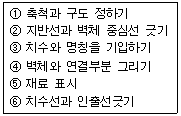
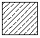
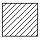
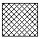
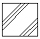
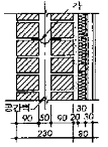

전산응용건축제도기능사 (2005-10-02 기출문제)
1과목: 건축구조
1. 다음 중 동바리 마루의 구성부분이 아닌 것은?
- 인방
- 멍에
- 장선
- 동바리돌
(정답률: 62%)

2. 오르내리창을 잠그는데 쓰이는 철물은?
- 크레센트(crescent)
- 레버터리힌지(lavatory hinge)
- 도어체크(door check)
- 도어스톱(oor stop)
(정답률: 71%)
3. 견고한 지반이 깊이 있을 경우 지상에서 원형통, 사각형통의 밑 없는 상자를 만들고, 그 속에서 토사를 파내어 상자를 내리 앉히고 저부에 콘크리트를 부어 기초로 하는 것으로 케이슨 기초라고도 불리우는 것은?
- 주춧돌기초
- 잠함기초
- 말뚝기초
- 직접기초
(정답률: 57%)
4. 다음 중 플레이트 보와 직접 관계가 없는 것은?
- 커버플레이트
- 웨브플레이트
- 스티프너
- 거싯플레이트
(정답률: 61%)
5. 각 층의 대린벽으로 구획된 벽돌벽에서 문꼴 나비의 합계는 그 벽길이의 최대 얼마 이하로 하는가?
- 1/2
- 1/3
- 1/4
- 1/5
(정답률: 46%)
6. 표준형 벽돌로 1.5B(1.0B+75㎜+0.5B) 공간쌓기를 할 경우 벽체 두께는 얼마인가?
- 475㎜
- 355㎜
- 375㎜
- 455㎜
(정답률: 75%)
7. 다음중 사각형 단면의 철근콘크리트 기둥에서 띠철근을 사용하는 가장 주된 목적은?
- 주근의 좌굴을 막기 위하여
- 주근 단면을 보강하기 위하여
- 콘크리트의 압축강도를 증가시키기 위하여
- 콘크리트의 수축 변형을 막기 위하여
(정답률: 66%)
8. 철근콘크리트조의 압축부재에 대한 설명중 옳지 않은 것은?
- 압축부재의 축방향 주철근의 최소 개수는 직사각형 띠철근 내부의 철근의 경우 4개이다
- 띠철근 압축부재 단면의 최소 치수는 200㎜이다.
- 띠철근 압축부재의 단면적은 최소 40,000㎜2이상이어야 한다.
- 나선 철근 압축부재 단면의 심부 지름은 200㎜이상이어야 한다.
(정답률: 50%)
9. 철근콘크리트기둥에서 띠철근의 수직간격기준에 대한 설명 중 옳지 않은 것은?
- 기둥 단면의 최소 치수 이하
- 종방향 철근 지름의 16배 이하
- 띠철근 지름의 48배이하
- 기둥 높이의 0.1배 이하
(정답률: 61%)
10. 다음 각 건축구조에 대한 기술 중 옳지 않은 것은?
- 가구식구조는 각 부재의 접합 및 짜임새에 따라 구조체의 강도가 좌우된다.
- 일체식구조는 각 부분이 일체화되어 비교적 균일한 강도를 가진다.
- 조립식구조는 경제적이나 공기(工期)가 길다
- 조적식구조는 조적 단위재료의 접착강도가 클수록 좋다.
(정답률: 69%)
11. 철근콘크리트벽에 복배근을 하여야 하는 벽체의 최소 두께는?
- 120㎜
- 150㎜
- 180㎜
- 250㎜
(정답률: 28%)
12. 철골구조에서 간사이가 15m가 넘거나 보의 춤이 1m 이상 되는 보를 판보로 하기에는 비경제적일 때 접합한 조립보는?
- 형강보
- 래티스보
- 상자형보
- 트러스보
(정답률: 40%)
13. 왕대공 지붕틀에서 중도리를 직접 받쳐주는 것은?
- 처마도리
- ㅅ 자보
- 깔도리
- 평보
(정답률: 46%)
14. 철근콘크리트구조의 원리에 대한 설명으로 틀린 것은?
- 콘크리트와 철근이 강력히 부착되면 철근의 좌굴이 방지된다.
- 콘크리트는 인장력에 강하므로 인장력을 부담한다.
- 콘크리트는 철근의 선팽창 계수가 거의 같다.
- 콘크리트는 내구성과 내화성이 있어 철근을 피복 보호 한다.
(정답률: 70%)
15. 철골조에서 주각부분에 사용되는 부재명이 아닌 것은?
- 베이스 플레이트
- 사이드 앵글
- 윙 플레이트
- 플랜지 플레이트
(정답률: 38%)
16. 다음 중 층도리에 대한 설명으로 옳은 것은?
- 지붕틀의 하중을 기둥에 전달하는 부재로서, 크기는 기둥의 단면과 같게 한다.
- 건물의 외벽에서 지붕머리를 연결하고 지붕보를 받아 지붕의 하중을 기둥에 전달하는 부재이다.
- 2층 이상의 건물에서 바닥층을 제외한 각 층을 만드는 가 로 부재이다.
- 기둥과 기둥사이를 연결한 벽체의 뼈대 또는 문틀이 되는 가로 부재이다.
(정답률: 32%)
17. 콘크리트를 다지면 물이 떠오르며 동시에 미세물이 상승하는데, 콘크리트 이어 붓기를 하기 위해 제거해야 할 이 미세물을 무엇이라 하는가?
- 블리딩
- 레이턴스
- 염화물
- 페이스트
(정답률: 30%)
18. 건축물의 자중 및 적재하중을 지반에 전달하는 구조부는?
- 지붕
- 계단
- 기초
- 창호
(정답률: 82%)
19. 다음 중 목재의 이음과 맞춤을 할 때 주의 사항으로 옳지 않은 것은?
- 공작이 간단하고 튼튼한 접합을 선택하여야 한다.
- 맞춤면은 수축, 팽창을 위해 틈을 주어 가공하여야 한다.
- 이음과 맞춤의 위치는 응력이 작은 곳으로 하여야 한다.
- 접합부분에 작용하는 응력이 균일하도록 배치한다.
(정답률: 63%)
20. 다음 중 왕대공 지붕틀에서 인장응력과 휨모멘트를 동시에 받는 부재는?
- ㅅ 자보
- 왕대공
- 빗대공
- 평보
(정답률: 20%)
2과목: 건축재료
21. 다음 속빈 콘크리트 기본 블록의 치수로 알맞지 않는 것은? (KS 규격, 단위는 ㎜)
- 390×190×190
- 390×190×150
- 390×190×100
- 390×190×80
(정답률: 49%)
22. 테라코타는 주로 어떤 목적으로 건축물에 사용되는가?
- 장식재
- 보온재
- 방수재
- 구조재
(정답률: 81%)
23. 다음은 나이테에 대한 설명이다. 틀린 것은?
- 춘재부와 추재부가 수간횡단면상에 나타나는 동심원형의 조직을 나이테라 한다.
- 일반적으로 열대지방의 목재는 연중 계속 성장하므로 나이테가 많고 명확하게 나타난다.
- 추재의 세포는 소형으로 세포막이 두껍고 조직은 비교적 치밀하다.
- 나이테는 간격이 좁을 수록, 추재부가 차지하는 면적이 클수록 비중과 강도가 크다.
(정답률: 50%)
24. 표준형 점토벽돌의 규격으로 옳은 것은?
- 190*90*57
- 210*100*60
- 190*100*60
- 200*100*57
(정답률: 80%)
25. 집성목재에 관한 기술 중 옳지 않는 것은?
- 아치와 같은 굽은 용재는 만들 수 없다.
- 목재의 강도를 인공적으로 조절할 수 있다.
- 길고 단면이 큰 부재를 만들 수 있다.
- 균질한 조직의 인공목재를 제조 할 수 있다.
(정답률: 42%)
26. 건축재료의 성질에 관한 용어로서 주철, 유리와 같이 작은 변형이 생기더라도 파괴되는 성질은?
- 전성
- 취성
- 인성
- 연성
(정답률: 82%)
27. 다음 미장재료중 응결 경화방식이 기경성이 아닌 것은?
- 석고 플라스터
- 회반죽
- 회사벽
- 돌라마이트 플라스터
(정답률: 44%)
28. 골재의 비중이 2.5이고, 단위용적중량이 1.8Kg/ℓ 일때 골재의 공극률(%)은?
- 28%
- 44%
- 72%
- 14%
(정답률: 27%)
29. 다음 중 결로현상 방지에 가장 좋은 유리는?
- 망입유리
- 무늬 유리
- 복층유리
- 접합유리
(정답률: 78%)
30. 다음의 창호 부속철물중 정첩으로 유지 할 수 없는 무거운 자재 여닫이 문에 쓰이는 것은?
- 플로어 힌지(floor hinge)
- 피벗힌지(pivot hinge)
- 래버토리힌지(lavatory hinge)
- 도어체크(door check)
(정답률: 48%)
31. 시멘트의 품질이 일정한 경우 일정한 무게 속에 입자가 많아 표면적이 클수록 (미세할수록) 발생하는 현상으로 옳지 않은 것은?
- 수화작용이 느려진다.
- 조기강도가 높아진다.
- 풍화작용이 일어나기 쉽다.
- 응결할 때 초기 균열이 생기기 쉽다.
(정답률: 34%)
32. 강화유리에 대한 설명으로 옳지 않은 것은?
- 유리를 가열한 후 급냉시켜 만든다.
- 보통유리보다 강도가 크다.
- 파괴되면 작은 알갱이로 분산된다.
- 현장에서 절단, 가공이 쉽다.
(정답률: 80%)
33. 화강암에 대한 설명으로 틀린 것은?
- 성분은 석영, 장석, 운모, 휘석, 감섬석등으로 되어있다.
- 석질이 견고하고, 풍화작용이나 마멸에 강하다.
- 고열을 받는곳에 적당하며, 세밀한 조각에 적당하다.
- 구조재, 내?외장재로 많이 사용된다.
(정답률: 57%)
34. 거푸집에 자갈을 넣은 다음, 골재 사이에 모르타르를 압입하여 콘크리트를 형성해 가는 것은?
- 경량 콘크리트
- 중량 콘크리트
- 프리팩트 콘크리트
- 폴리머 콘크리트
(정답률: 55%)
35. 인조가죽 또는 합성피혁이라 불리는 것으로 가구에 많이 쓰이는 합성 수지 제품은?
- 필름
- 레저
- FRP
- 우레아 폼
(정답률: 43%)
36. 현대 건축 재료에 대한 내용으로 틀린 것은?
- 고성능화, 생산성, 공업화가 요구된다.
- 건설작업의 기계화와 맞도록 재료를 개선한다.
- 수작업과 현장시공의 재료로 개발한다.
- 생산성을 높이고 에너지를 절약한다.
(정답률: 83%)
37. 접착성이 매우 우수하여 금속, 유리, 플라스틱, 도자기, 목재, 고무등에 우수한 접착성을 나타내는 접착제는?
- 에폭시수지 접착제
- 멜라민 수지 접착제
- 요소수지 접착제
- 페놀수지 접착제
(정답률: 56%)
38. 다음 점토제품 가운데 가장 저급한 원료를 사용하는 것은?
- 타일
- 기와
- 테라코다
- 위생도기
(정답률: 48%)
39. 점토 벽돌 중 지나치게 높은 온도로 구워 낸 것으로 모양이 좋지 않고 빛깔은 짙지만 흡수율이 매우 적고 압축강도가 매우 큰 벽돌을 무엇이라 하는가?
- 이형벽돌
- 과소품 벽돌
- 다공질 벽돌
- 포도 벽돌
(정답률: 53%)
40. 장기에 걸쳐 강도의 증진은 없지만 조기의 강도발생이 커서 긴급공사에 사용되는 시멘트는?
- 중용열포틀랜드 시멘트
- 고로 시멘트
- 알루미나 시멘트
- 실리카 시멘트
(정답률: 49%)
3과목: 건축계획 및 제도
41. 조적조 벽체를 제도하는 순서가 바른 것은?

- ①-②-③-④-⑤-⑥
- ①-②-④-⑥-⑤-③
- ①-②-④-⑤-⑥-③
- ①-⑥-②-③-④-⑤
(정답률: 67%)
42. 건축물의 기준층 평면도는 바닥에서 높이 몇 m정도 높이에서 수평 절단한 수평투상 도면인가?
- 0.5m
- 1.2m
- 2m
- 2.5m
(정답률: 50%)
43. 직교 좌표계의 기준점 (2,1)에서 X쪽으로 (5), Y쪽으로 (-7)만큼 이동한 경우 절대 좌표는?
- (7,8)
- (-3,6)
- (-3,-6)
- (7,-6)
(정답률: 79%)
44. 사람이나 차, 또는 화물 등의 흐름을 도식화 하여 나타낸 설계도면은?
- 동선도
- 구상도
- 조직도
- 면적도표
(정답률: 79%)
45. 도면작도에서 석재의 재료 표시 기호로 옳은 것은?




(정답률: 73%)
46. 제도 용지의 규격에 있어서 가로와 세로의 비로서 옳은 것은?
- 루트 2 : 1
- 2 : 1
- 루트 3 : 1
- 3 : 1
(정답률: 82%)
47. 그림과 같은 벽돌조 구조 단면에서 “가” 부분의 명칭은?

- 듀벨
- 긴결철물
- 방수지
- 홈통
(정답률: 59%)
48. 다음 중 건축도면에서 경사지붕의 물매를 표시한 것으로 옳은 것은?
- 3/10
- 5/20
- 2/30
- 6/50
(정답률: 67%)
49. 다음 중 선의 종류가 실선이 아닌 것은?
- 치수선
- 치수보조선
- 단면선
- 경계선
(정답률: 57%)
50. 다음 중 배치도에 표시하지 않아도 되는 사항은?
- 건물의 위치
- 축척
- 각 실의 위치
- 대지의 경계선
(정답률: 52%)
51. 문서등의 철을 위하여 도면을 접을 때 접는 크기는 얼마를 원칙으로 하는가?
- A2
- A3
- A4
- A6
(정답률: 78%)
52. CAD사용의 효과와 가장 거리가 먼 것은?
- 설계의 생산성 향상
- 도면 작성시간의 증가
- 설계 오류의 감소
- 설계변경에 따를 수정 작업의 용이
(정답률: 86%)
53. CAD 시스템의 출력장치가 아닌 것은?
- 라이트 펜
- 프린터
- 플로터
- 모니터
(정답률: 66%)
54. 주택도면을 제도하는데 있어서 유의 해야할 사항에 대한 설명으로 부적당 한 것은?
- 기초에 사용하는 재료를 알아야 한다.
- 기초의 깊이는 지질에 따라서만 결정하면 된다.
- 제도 순서와 도면 내용을 숙지해야 한다.
- 기초의 구조와 크기등을 이해해야 한다.
(정답률: 78%)
55. 투시도에 쓰이는 용어중 사람이 서 있는 곳을 무엇이라 하는가?
- 정점(S.P)
- 화면(P.P)
- 소점(V.P)
- 기선(G.P)
(정답률: 32%)
56. 건축도면에서 사람의 배경과 표현을 통해 알 수 있는 것과 가장 거리가 먼 것은?
- 스케일 감
- 공간이 깊이
- 건물 공간의 관습적인 용도
- 건물의 배치
(정답률: 48%)
57. 도면의 표시기호로 옳지 않은 것은?
- L : 길이
- H : 높이
- W : 나비
- A : 용적
(정답률: 64%)
58. 다음 중 컴퓨터와 사람 사이에 상호 의견을 주고받게 하기 위해 사람의 의사를 컴퓨터에 보내기 위한 장치인 것은?
- 플로터
- 마우스
- 프린터
- 모니터
(정답률: 57%)
59. 제도를 할 때 알아야 할 일반사항 중 바르게 설명된 것은?
- 제도용지의 치수 중에서 가장 큰 것은 A1 이다.
- 표제란은 일반적으로 도면의 좌측상단에 표시한다.
- 선은 모양 및 굵기에 따라 용도가 다르다.
- 도면에 표시하는 글자는 쓰기 쉽고, 읽기 쉬우며 독창적이고 특징이 있는 것이 좋다.
(정답률: 66%)
60. 이형철근의 직경이 13㎜ 이고 배근 간격이 150㎜ 일 때 도면 표시법으로 옳은 것은?
- φ13 @ 150
- 150 φ 13
- D13 @ 150
- @150 D 13
(정답률: 81%)